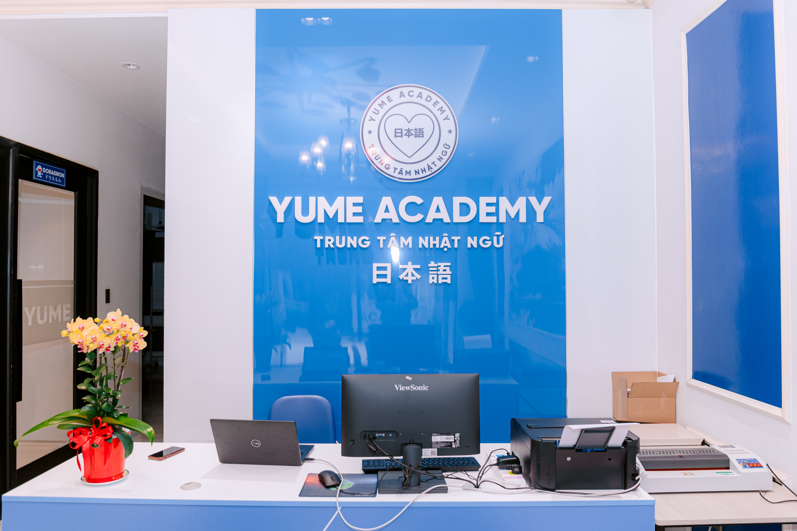

“Yume (夢)” trong tiếng Nhật có nghĩa là “Giấc mơ”. Từ giấc mơ ấy, Yume Academy ra đời với mong muốn tạo nên một nơi mà mọi người có thể học tiếng Nhật bằng niềm vui, bằng cảm hứng và bằng trái tim.
Được sáng lập bởi những người có hơn 20 năm làm việc trong môi trường Nhật Bản, Yume Academy mong muốn mang đến cho người học một hành trình học tiếng Nhật tự nhiên, truyền cảm hứng và gắn liền với thực tế – nơi mỗi bài học đều khơi dậy niềm yêu thích ngôn ngữ và văn hóa Nhật Bản.
“Chúng tôi tin rằng: khi học viên được học trong một môi trường tận tâm và chuẩn phong cách Nhật, tiếng Nhật sẽ không còn là thử thách – mà là hành trình khám phá và trưởng thành.”

| Giá trị | Ý nghĩa |
|---|---|
| Tận tâm (まごころ) | Mỗi bài giảng đều được chuẩn bị với tâm huyết, đặt lợi ích học viên lên hàng đầu. |
| Chuẩn Nhật (日本らしさ) | Kỷ luật, tôn trọng và chỉn chu – phản ánh tinh thần Nhật Bản trong mọi hoạt động. |
| Tương tác (対話) | Lấy học viên làm trung tâm – học qua trao đổi, thực hành và trải nghiệm thực tế. |
| Đồng hành (ともに歩む) | Không chỉ dạy, mà cùng học viên đi hết hành trình chinh phục tiếng Nhật. |
Đội ngũ giáo viên tại Yume Academy là sự hòa quyện giữa tâm huyết, chuyên môn và tinh thần Nhật Bản chuẩn mực:
“Mỗi học viên là một câu chuyện – và mỗi giáo viên Yume đều dốc hết lòng để câu chuyện đó thành công.”
Tại Yume Academy, mỗi khóa học – từ Giao tiếp (Marugoto), Dạy và ôn thi JLPT, đến Tiếng Nhật hiện trường doanh nghiệp – đều có mục tiêu đầu ra rõ ràng. Học viên được theo dõi tiến độ, đánh giá năng lực định kỳ và được đảm bảo đạt được năng lực ngôn ngữ phù hợp với lộ trình cá nhân.
Chúng tôi quản lý và cập nhật hồ sơ học tập của từng học viên sau mỗi buổi học, kết hợp giữa:
Mục tiêu là giúp học viên nhìn thấy sự tiến bộ thật của bản thân sau mỗi giai đoạn học.
Tại Yume Academy, chúng tôi duy trì văn hóa “Kaizen – cải tiến không ngừng” của Nhật Bản: Mọi góp ý từ học viên đều được ghi nhận, phân tích và phản hồi cụ thể. Mỗi khóa học sau không chỉ được cập nhật giáo trình và phương pháp giảng dạy mới, mà còn được điều chỉnh dựa trên trải nghiệm thật của học viên – để đảm bảo rằng “mỗi lớp sau, Yume luôn tốt hơn chính mình hôm qua.”
心を込めて育て、信頼を築く
Đào tạo bằng trái tim – Kiến tạo niềm tin.
Học tiếng Nhật không chỉ là chinh phục một ngôn ngữ, mà là bước khởi đầu để mở rộng cơ hội học tập, nghề nghiệp và kết nối văn hóa Nhật Bản.
🎓 Đừng chờ đợi. Hãy bắt đầu hành trình của bạn cùng Yume hôm nay."